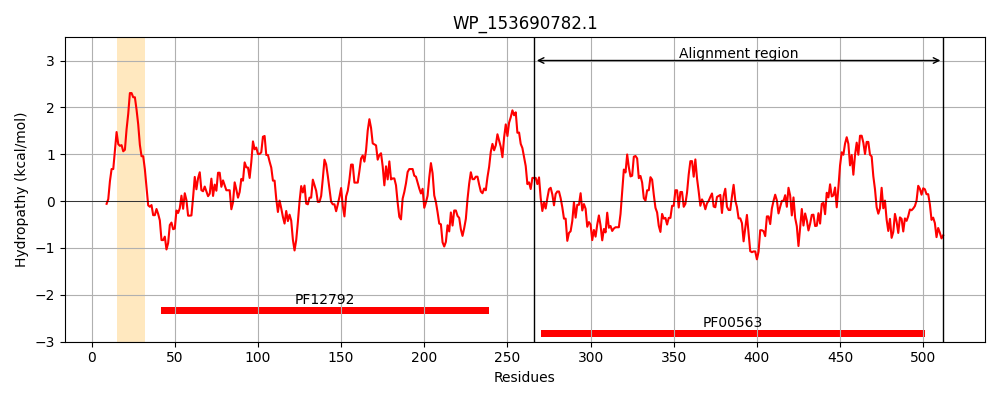
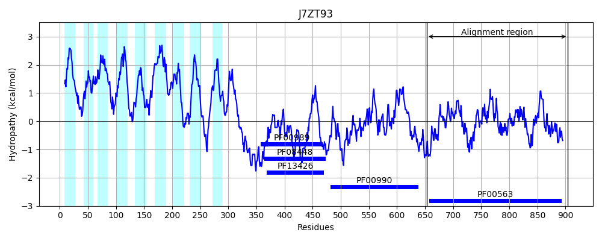
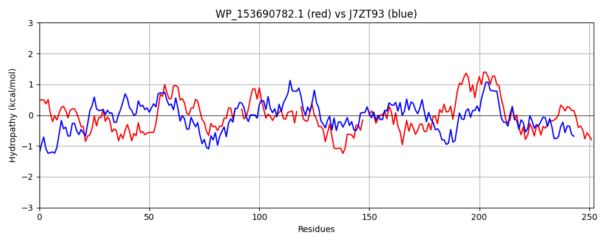

Hit Accession: J7ZT93
Hit TCID: 9.B.34.1.5
Hit Description: gnl|BL_ORD_ID|5486 gnl|TC-DB|J7ZT93|9.B.34.1.5 Diguanylate cyclase (GGDEF) domain-containing protein OS=Bacillus cereus HuA2-4 GN=IG7_01488 PE=4 SV=1
Mach Len: 252
e:0.000000
Query TMS Count : 1
Hit TMS Count: 9
TMS-Overlap Score: 0.000000
Predicted Substrates:None
BLAST Alignment:
Score: 342 , Bit scores: 136 bits, E-value: 6.3e-34, Alignment length: 252, Percentage identity: 35
Query: 266 RMSFSREISLGITAREFTLWCQPLQDARSGRCCGVEILLRWNNPRRGEISPEVFIPIAEGDNLIIPLTRYVIAETARRLDAFPSEPHFHI--AINVAARHFAHGLLLHDLHNYWFSVN-PVQQLVVELTERDVLQDGDQHMAEHLHLK--GVQLAIDDFGTGNSSLWWLEKLRPDVLKIDRSFTSSVGIDSVNATVTDIIIALADRLNIVTVAEGVETLEQESYLRGHGVDVLQGFYYARPMPIEAFPAWLA 512
R+ +++ + E L QP D+++G G E L+RW +P G ISP FIPIAE + II + ++ + E R+L + S + ++ IN++A F + + + V P + +ELTER + D + +A+ LK GV L+IDDFGTG SSL +L D LKI R F + +G + + II+LA LN+ +AEGVET EQ + L+ + ++QG+YY++P+ + F +L+
Sbjct: 653 RLRLEQDLPKALENNELFLLYQPQVDSKTGMVIGAEALIRWQHPELGLISPFEFIPIAEETSQIISIGKWTLQEACRQLKEWHSAGYVNLKMGINLSAIEFEQKDFVQAIISTIEEVGVPASSIDLELTERIAMVDEKETLAKLKALKSYGVHLSIDDFGTGYSSLAYLPLYPIDTLKIPREFVNRIGNSTDGNEIIHTIISLAHTLNMKVIAEGVETKEQLTVLQRNACYLIQGYYYSKPVSEDEFIKFLS 904 | Protein Hydropathy Plots: |
|---|
|  |  |
Pairwise Alignment-Hydropathy Plot:
|
|---|
|  |